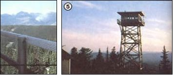

LEFT: Fire watchers are responsible for spotting smoke plumes (such as distant ""cloud"" in this picture) withina 20-mile radius. RIGHT: A tree house that's above the trees: This tower rises 40 feet from an Idaho mountaintop.